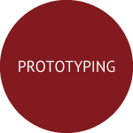

<!DOCTYPE html>
<html lang="ja">
<head>
  <meta charset="utf-8">
  <meta name="viewport" content="width=device-width,initial-scale=1">
  <title>Naoki Sugiyama</title>
  <link rel="stylesheet" href="index.css">
  <script type="text/javascript" src="http://ajax.googleapis.com/ajax/libs/jquery/1.9.1/jquery.min.js"></script>
  <script type="text/javascript">
$(function(){
    $('a[href^=#]').click(function(){
        var speed = 500;
        var href= $(this).attr("href");
        var target = $(href == "#" || href == "" ? 'html' : href);
        var position = target.offset().top - 60;
        $("html, body").animate({scrollTop:position}, speed, "swing");
        return false;
    });
});
</script>

</head>
<body>
  <div id="wrapper">

    <div id="contentA">

      <div id="shadow">

        <div id="header">
          <div id="headerwidth">
          <a href="#wrapper" class="logo">PORTFOLIO</a>
          <ul class="nav">
            <li><a href="#contentB">ABOUT</a></li>
            <li><a href="#contentC">MESSAGE</a></li>
            <li><a href="#contentD">VISION</a></li>
            <li><a href="#footer">CONTACT</a></li>
            <li><a href="https://shinjin.amebaownd.com/" target="_blank">BLOG</a></li>
          </ul>
        </div><!-- headerwidth -->
        </div><!-- header -->

        <div id="title">
          <h2>Naoki Sugiyama</h2>
          <h6>Dear goodpatch. This is my portfolio.</h6>
          <a href="mailto:naokisfc32@gmail.com" target="_blank">GET IN TOUCH</a>
        </div><!-- title -->

      </div><!-- shadow -->

    </div><!-- contentA -->

    <div id="contentB">

      <div class="article">
        
        <p class="pr-p"><strong>杉山尚樹(1990年2月生まれ）。神奈川県横浜市出身。</strong><br>趣味はDTMとダーツと海外旅行。愛読書は「ブラック・マシン・ミュージック」（野田努著）と「自分の中に毒を持て」（岡本太郎著）。2012年に新卒でエイベックス・グループへ入社。様々なアーティストの音楽パッケージ、コンサートグッズのWebプロモーションに携わる。2015年4月より同社先輩社員と共にコンサートグッズ企画製造会社を創業。<br>
        ▶ Adobe(Ai , Ps , Pr) 2013年〜　▶︎コーディング(HTML , CSS , Ruby on Rails) 2015年〜</p>

      </div><!-- article -->

    </div><!-- contentB -->

    <div id="contentC">

      <div class="article">
        <h1 class="message-title">MESSAGE</h1>
        <p class="message">ご覧頂きありがとうございます。未経験ではございますが、以下に志望の経緯と想いを書きました。是非ご一読頂ければ幸いです。<br><br>
        音楽業界ではWebプロモーションを担当し、様々な施策を行って参りました。会社からはPVとCVRを求められましたが、私は単に商品を無理矢理見せたり、買わせようとする宣伝に違和感を感じていました。<br><br>
        それよりも、商品をもっと魅力的に伝えるにはどうしたらいいか、お客様がストレスなく購入に至るまでの道筋を描けているか。そういったことを形にするため、Adobeツール・マーケティングを独学し、慣例的に行われてきた方法ではなくケースによって品を変え、新しい方法を模索してきました。<br><br>
        2014年の終わりにECサイトを運営する部署へ配属されました。部内では知名度やバナーのクリック数が課題に挙がっていましたが、私はそれ以前に複雑なページ遷移と乱雑に配置された広告、勝手に再生される告知映像など、サービスがユーザーの目を見ていないことに疑問を感じました。<br><br>
    私は上司にUI/UXの再設計を行うよう働きかけましたが、その費用対効果について問われ、私は具体的に答えることができませんでした。プロモーションにしてもサービスにしても、重要なのは短期的な予算達成よりも、そのブランドを愛してもらうこと。そのためによりユーザーフレンドリーで、素晴らしい顧客体験を提供することが大切であるということを今も信じており、自分の手で実現したいという一心で初心者ながらプログラミングを学んでおります。<br><br>
そんなある時、goodpatch様の存在を知りました。デザインの力を信じ、世界を舞台に前進している皆様の姿を見て衝撃を受け、自分もこの一員となり、皆様のミッションに一緒に挑んでいきたいと強く思いました。<br><br>
現時点で御社にとってメリットのあるスキルがあるとは思えませんが、猛スピードで成長して必ず役に立ちます。未経験からの挑戦ですが、チャンスを頂きたく、応募致しました。是非一度会ってお話させて頂きたいです。何卒宜しくお願い申し上げます。</p>
      </div><!-- article -->

    </div><!-- contentC -->

    <div id="contentD">

      <div id="articleD">
        <h1>VISION</h1>
        <p><strong>フロント・バックエンドを横断したデザイン及びエンジニアリングスキルを持ち、Web領域における事業化と成長戦略を立案・実装できるビジネスパーソンを目指します。</strong><br><br>
        まずは1年間でキャッチアップし、3年目までにデザイン領域のプロフェッショナルを目指します。<br>
      その後事業開発を通して自己成長と共にgoodpatchのミッションに貢献します。</p>
        <div class="skill-box">
          
          <p>アイデアをスピーディーに形にするプロトタイピングスキル。新しいサービスやアプリケーションを次々に生み出していきたい。</p>
        </div><!-- skill-box -->
        <div class="skill-box">
          
          <p>最良のUXを設計し、それに伴う最適なUIを実装するデザイン及びコーディングスキルにおいてプロフェッショナルを目指します。</p>
        </div><!-- skill-box -->
        <div class="skill-box">
          
          <p>サービスの成長戦略を設計し、マーケティング及びデータ・技術的視点からグロースさせるスキルを身につけたい。</p>
        </div><!-- skill-box -->
      </div><!-- articleD -->

    </div><!-- contentD -->

    <div id="footer">

      <div id="footer-top">
        <div id="foonter-top-article">
          <div class="footer-boxA">
            <h3 class="footer-heading">HISTORY</h3>
            <p>1990年2月　　　和歌山県の病院で産まれる<br>
              2012年3月　　　成城大学経済学部経営学科卒業<br>
              2012年4月　　　エイベックス・マーケティング(株)<br>
              2014年7月　　　エイベックス・ミュージック・クリエイティヴ(株)<br>
              2015年3月　　　エイベックス退社<br>
              2015年4月　　　アイルマティクス(株)副社長就任</p>
          </div><!-- footer-boxA -->
          <div class="footer-boxB">
            <h3 class="footer-heading">CONTACT</h3>
            <p class="en">MAIL<br><a href="mailto:naokisfc32@gmail.com" target="_blank">naokisfc32@gmail.com</a><br>
          BLOG<br><a href="https://shinjin.amebaownd.com/" target="_blank">https://shinjin.amebaownd.com/</a></p>
          </div><!-- footer-boxB -->
        </div><!-- footer-top-article -->
      </div><!-- footer-top -->

      <div id="footer-bottom">
        <div id="footer-bottom-article">
          <p class="footer-right">Copyright &copy; 2015 naoki sugiyama. All Rights Reserved.</p>
          <p class="footer-left">PORTFOLIO</p>
        </div><!-- footer-bottom-article -->
      </div><!-- footer-bottom -->
    </div><!-- footer -->

  </div><!-- wrapper -->
</body>
</html>
